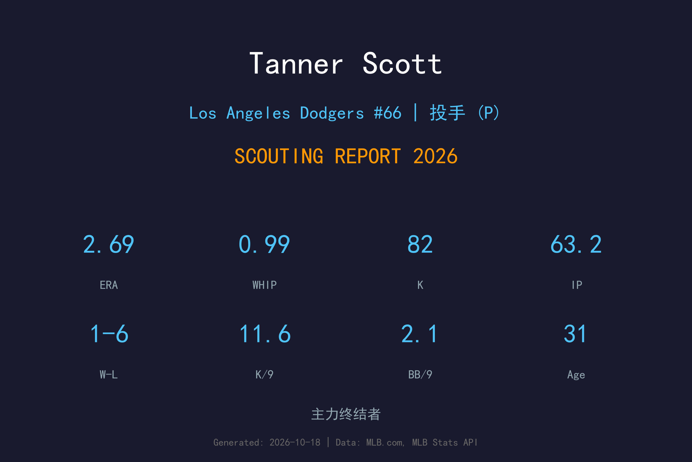
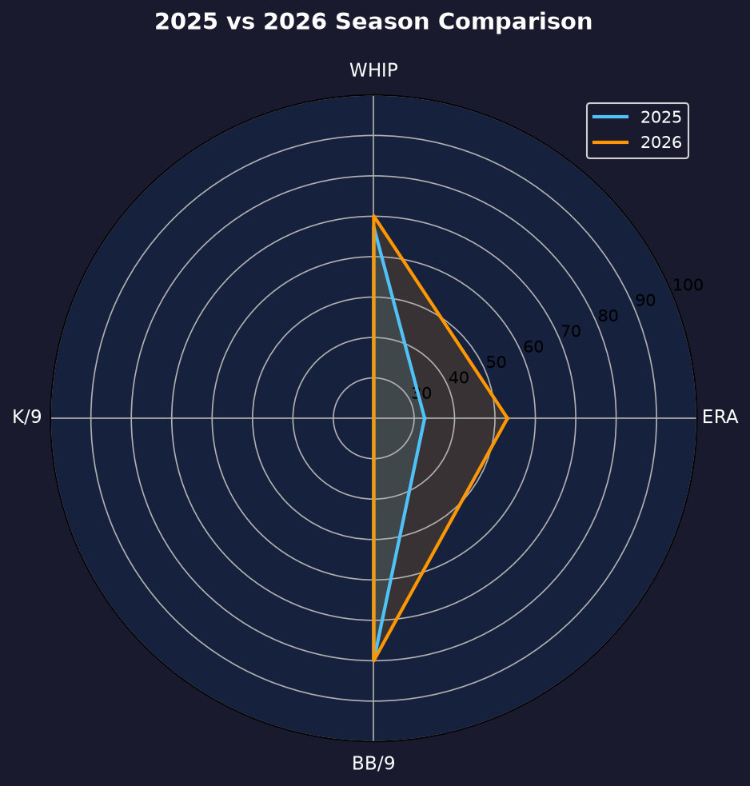
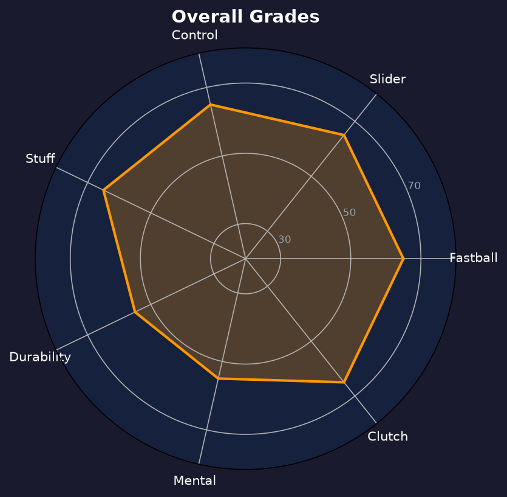

Los Angeles Dodgers #72 | 终结者（左投） | 左投 / 左打 | 火球终结者

Tanner Scott 是道奇2026年的终结者，以接近三位数的伸卡速球与滑球组成的暴力两球种著称。当他的控球在线时，第九局几乎可以提前打卡。
2025年他以自由球员身份加盟道奇的第一年并不顺利（4.74 ERA），但2026年他彻底反弹：69场出赛、2.69 ERA、0.99 WHIP、25次救援成功，救援成功率86.2%。三振率11.6 K/9（82K/63.2IP）搭配仅2.12 BB/9，K/BB 比5.47 是顶级终结者水准。
32岁的 Scott 用行动回击了质疑。他的伸卡球下沉幅度大、尾劲十足，是制造软弱滚地球与挥空的利器。季后赛虽然吞下败投且被轰2支全垒打，但整季的成绩单足以让他继续稳坐第九局。
从金莺队登上大联盟，2022年在马林鱼缴出4.31 ERA、20次 hold 奠定后援地位。
1.75 ERA、31次救援成功，首次入选全明星，成为自由市场最抢手的左投后援。
25次救援成功、ERA 从4.74 降至2.69，K/BB 比5.47 重回 elite closer 行列。

| 赛季 | G | W-L | ERA | IP | SO | BB | WHIP | SV |
|---|---|---|---|---|---|---|---|---|
| 2025 | 61 | 1-4 | 4.74 | 57.0 | 60 | 18 | 1.26 | 23 |
| 2026 | 69 | 1-6 | 2.69 | 63.2 | 82 | 15 | 0.99 | 25 |
球速：96-99 mph
评分：A
Scott 的核心武器。尾劲十足的伸卡球既有速球的速度又有下坠位移，制造大量滚地球与挥空，是第九局的定心丸。
球速：86-89 mph
评分：A-
与伸卡球速度落差约10mph，横向位移锐利，是对付右打者两好球后的 finish pitch。2026年被轰的4支全垒打多出自这颗球失手时。
11.6 K/9 配 2.12 BB/9，K/BB 比5.47 是全队投手最佳。他的 WHIP 0.99 意味着平均每局不到1人上垒——对终结者来说这是顶级数据。被打击率与长打率都被压在全联盟后援前段。
1胜6败的战绩看似刺眼，但终结者的败投多与第9局平分或落后时登板有关，不代表表现差。真正需要留意的是4次救援失败（29次机会中），其中2次发生在赛季末的关键战役，直接导致道奇分区排名被动。
这是 Scott 生涯最完整的赛季之一：ERA 2.69、FIP 水准甚至更低、25次救援成功。他用一整年证明自己2025年的低迷只是适应期，2026年的他才是道奇花大钱签下的那位全明星终结者。

完成反弹的 elite 级终结者，伸卡球品质联盟前列
A- 级 / 顶级终结者
道奇 2026 季后赛战绩：NLDS 3-1 晋级、NLCS 0-4 止步。
| G | IP | ERA | WHIP | SO | BB | H | HR |
|---|---|---|---|---|---|---|---|
| 6 | 5.2 | 4.76 | 1.06 | 10 | 3 | 3 | 2 |
Tanner Scott 的2027赛季将继续以终结者身份出发。他需要用更稳定的季后表现来证明自己的 elite 成色，同时控制伸卡球老化带来的衰退风险。
2026：69场、25SV、2.69 ERA——完美反弹年
2027：目标 30 次救援成功、ERA 2.50 以下，首次入选道奇全明星候选
2028+：随着年龄增长可能逐步转任 setup 或 shared closing，视速球衰退程度
Tanner Scott 出生于佛罗里达州 Palm Beach Gardens，2015年被巴尔的摩金莺在第六轮选中。2017年他登上大联盟，凭借快速球与滑球的暴力组合逐渐在牛棚站稳脚跟。
2022年他被交易至迈阿密马林鱼，2023年缴出1.75 ERA 的生涯年并首次入选全明星。2025年，他与洛杉矶道奇签下大合约，但首年表现挣扎；2026年他用一整年的顶级表现回击了所有质疑。
Scott 以安静的竞争心态著称。他不像其他终结者那样张扬，但在牛棚里是最专注的准备者之一。他的职业生涯从先发转型到牛棚再到终结者的路径，也是现代投手开发的经典案例。